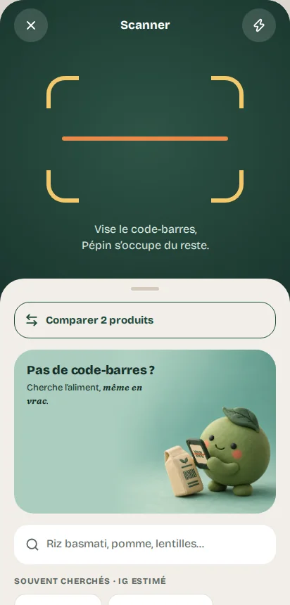
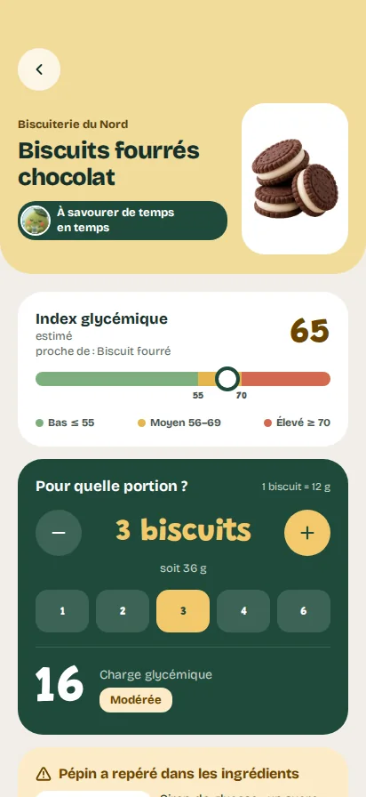
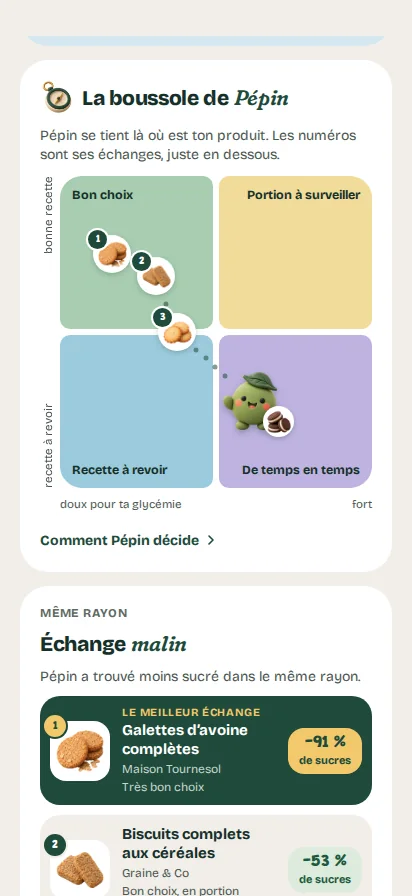
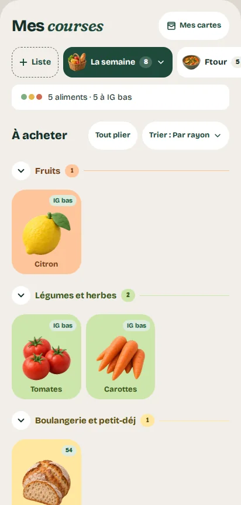
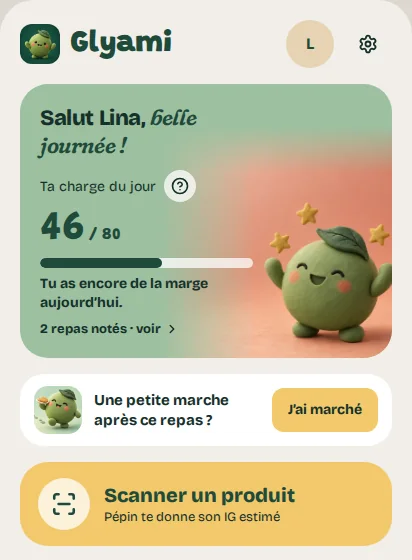
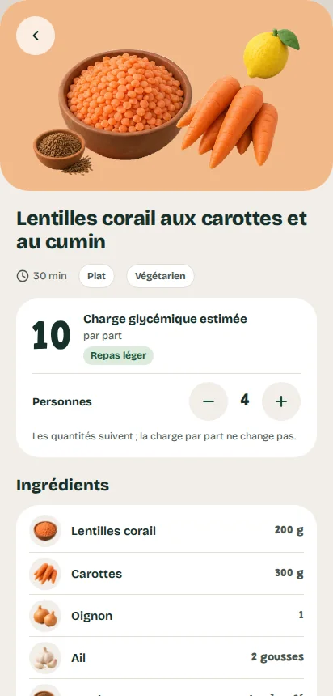
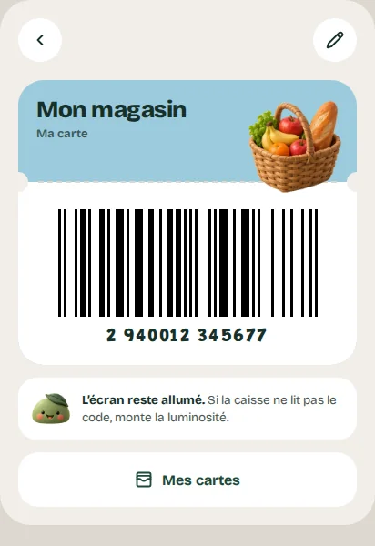
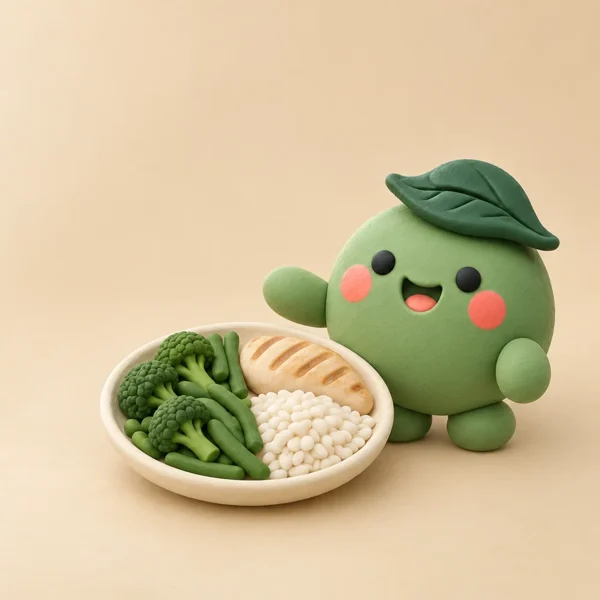

Glyami transforme un code-barres en information simple, et ta liste de courses en alliée : impact glycémique estimé, alternatives du même rayon, listes à partager. Sans transformer tes repas en équations.
Gratuit, sans compte, sans publicité. Français, arabe, anglais, espagnol.



Comment ça marche
Scanne
Le code-barres suffit : Pépin retrouve le produit et sa composition. Produit introuvable ? Recopie l'étiquette, il est calculé quand même.
Comprends
Index glycémique estimé et charge glycémique pour la portion que tu manges vraiment, avec une couleur simple : bas, moyen ou élevé.
Compare et échange
Celui-ci ou celui-là ? Compare deux produits, et laisse la boussole de Pépin te montrer des échanges plus doux du même rayon.
Ta liste de courses, rayon par rayon.
Des tuiles dessinées à toucher, rangées dans l'ordre du magasin. Et à côté de chaque aliment, son IG estimé.
- Plusieurs listes : la semaine, un repas de fête, le placard.
- Des listes toutes prêtes, signées Pépin.
- L'envoi à un proche, par message ou par code à scanner.
- Les ingrédients d'une idée repas ajoutés en un geste.
- Tes cartes de fidélité prêtes à la caisse.

Et tout le reste
Et la recette ?
Pépin relit l'étiquette pour toi : Nutri-Score, Nova, additifs, puis sucres ou fibres selon le produit, en quatre tuiles faciles à lire.
Le savais-tu ?
Une carte vrai ou faux par jour pour comprendre, en une minute, ce qui fait monter la glycémie.
Ta charge du jour
Tes repas s'additionnent dans une jauge avec un repère de 80, que tu peux régler. Tu vois d'un coup d'œil où tu en es, sans rien calculer.

Idées repas
Des plats simples avec leur charge estimée par part. Choisis le nombre de personnes : les quantités suivent, et les ingrédients partent dans ta liste.

Mes cartes
Scanne une fois le code de ta carte de fidélité : Pépin te la ressort à la caisse. Tes cartes restent sur ton téléphone.

Mon assiette
Compose ton repas, pâtes, légumes et poulet par exemple : Glyami estime la charge du repas entier, pas seulement celle d'un produit.

Mes alertes
Sucres cachés, allergies, sans porc, sans alcool : Pépin inspecte les ingrédients à chaque scan et te prévient.
Mon suivi
Historique des scans et des repas, poids et IMC sur une jauge claire, et ta marche après le repas, cochée jour après jour.
« Je t'explique, je ne juge pas. »
Pépin est le guide de l'app : il relit l'étiquette, propose un échange, et te dit comment savourer un produit plutôt que de te le déconseiller.
Pourquoi tu peux t'y fier
Glyami dit d'où viennent ses chiffres, et ce qu'ils ne disent pas.
Des tables publiées
L'index est estimé à partir des tables d'Atkinson et al. (2008 et 2021), de la base de l'université de Sydney et de la composition du produit.
Des données ouvertes
Les produits viennent d'Open Food Facts, les glucides des idées repas, de la table Ciqual 2025 de l'Anses.
Une estimation, pas une mesure
Ta réponse réelle peut être différente. Glyami n'est pas un dispositif médical et ne remplace pas l'avis d'un professionnel de santé.
Tes données restent chez toi
Pas de compte, pas de serveur Glyami, pas de pub, pas de traceur dans l'app. Tout se calcule sur ton téléphone. Les seules connexions servent à retrouver un produit dans une base alimentaire ouverte. Lire la politique de confidentialité
Questions fréquentes
C'est quoi l'index glycémique ?
L'index glycémique (IG) indique à quelle vitesse un aliment contenant des glucides fait monter la glycémie, comparé au glucose pur (100). On parle d'IG bas jusqu'à 55, modéré de 56 à 69 et élevé à partir de 70. Glyami affiche un IG estimé à partir de tables scientifiques publiées.
Et la charge glycémique ?
La charge glycémique (CG) tient compte de la quantité que tu manges vraiment : CG = IG × glucides de la portion (en grammes) ÷ 100. Un aliment à IG élevé peut avoir une petite charge si la portion est modeste. Glyami la calcule pour ta portion et additionne tes repas dans ta charge du jour.
Glyami est-il vraiment gratuit ?
Oui. Pas d'abonnement, pas de publicité, pas d'achat intégré et pas de compte à créer.
Où vont mes données ?
Nulle part : tout ce que tu saisis reste sur ton téléphone. Il n'y a pas de serveur Glyami. Les seules connexions servent à retrouver un produit dans une base alimentaire ouverte, sans aucune donnée personnelle.
Glyami remplace-t-il mon médecin ?
Non. Glyami donne des informations nutritionnelles et des estimations. Ce n'est pas un dispositif médical : l'app ne pose pas de diagnostic, ne calcule pas de dose et ne remplace pas l'avis de ton médecin ou de ton diététicien.
Pour qui est fait Glyami ?
Pour tout adulte qui veut comprendre l'effet de ses repas sur la glycémie et mieux choisir ses produits, au quotidien. Glyami informe ; il ne suit pas une maladie et ne remplace pas un suivi médical.
D'où viennent les chiffres ?
Les index glycémiques sont estimés à partir de tables publiées (Atkinson et al., 2008 et 2021 ; base de l'université de Sydney) et de la composition du produit. Les informations des produits viennent d'Open Food Facts, et les glucides des idées repas de la table Ciqual 2025 de l'Anses. Tout est détaillé dans l'app : Réglages → Sources des données.
Mes cartes de fidélité sont-elles en sécurité ?
Elles restent sur ton téléphone : le code, le nom et la photo éventuelle ne sont envoyés nulle part. Glyami n'est fait que pour les cartes de fidélité : n'y mets pas ta carte bancaire. Si tu saisis un numéro qui ressemble à celui d'une carte bancaire, Pépin ne le garde pas.
Sur quels téléphones et dans quelles langues ?
Glyami arrive bientôt sur Android, via Google Play. L'app est disponible en français, en arabe, en anglais et en espagnol.
Avant, ça s'appelait Glycéo ?
Oui. Glyami s'appelait Glycéo jusqu'en octobre 2026. C'est la même app, avec le même Pépin ; seul le nom change.
Prêt pour tes prochaines courses ?
Bientôt sur Google PlayGlyami est un outil d'information nutritionnelle. Ce n'est pas un dispositif médical : l'app ne pose pas de diagnostic et ne remplace pas l'avis d'un professionnel de santé.